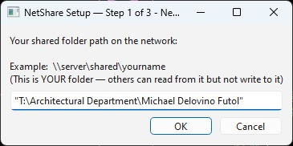
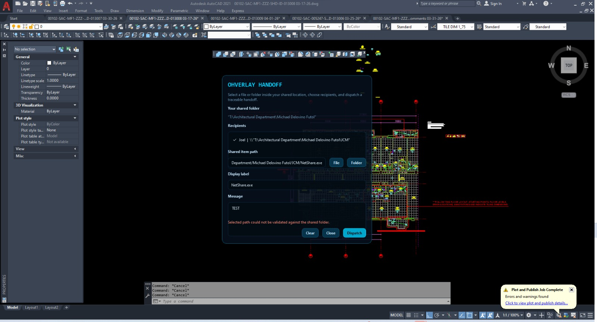
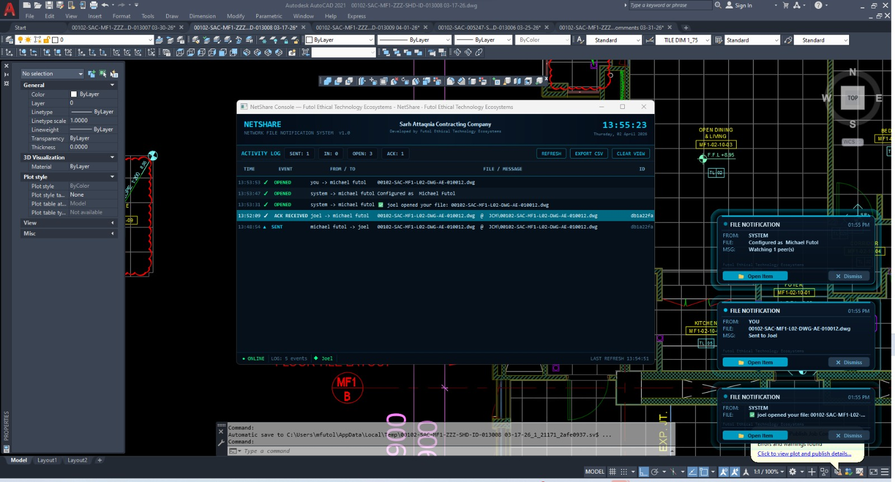

4.0.2
Current office release with working update origin.
Ohverlay is a calm workspace layer for sticky notes, network file handoffs, supervisor dashboards, and future AI assistance. It is designed for visibility without clutter, urgency without panic, and coordination without surveillance theater.
Current office release with working update origin.
Separate Standard User and Supervisor builds.
Logs, overlays, and traceability stay inspectable on the machine.
The office build already moved beyond ambient visuals. It now combines reminder overlays, team dispatch, logs, and role-aware visibility in a single runtime.
Multiple simultaneous notes, countdowns, elapsed timers, theme options, transparency control, and lock state for click-through behavior.
Send a file from a shared folder, notify selected peers, open the path from the receiver overlay, and preserve the sender/recipient/time record.
The supervisor build is not a different brand skin. It is a different operational role with dashboard access, timeline review, and deadline visibility.
This is the current product state, not concept art. These are the surfaces already present in the active Windows build.
Select a file or folder inside your shared location, choose peers, dispatch the handoff, and let the receiver open the routed path directly from the overlay.
Create multiple notes at once with countdown, elapsed time, transparency, theme, font scaling, lock state, and overdue escalation support.
Sent, received, opened, acknowledged, and sticky-note actions are recorded locally for review and export.
Standard User and Supervisor EXEs ship separately so the operational surfaces match the actual office role.
These screenshots came from the actual deployment flow: setup, handoff dispatch, and console plus overlay notifications.

Configure the network path that other users can read from. Ohverlay normalizes Windows paths and can convert mapped drives to UNC where Windows exposes that mapping.

Pick the shared item, choose recipients, add a label and message, then dispatch the notification without leaving the active workspace.

Receivers get a glowing overlay, and the activity console records sent, opened, and acknowledgment events for later review.
Use the Standard User EXE for staff or the Supervisor EXE for coordinators and oversight roles.
Open Control Center, set your shared folder, your username, and the peers you want to notify.
Create file handoffs, sticky notes, or timed reminders. Receivers can open directly from the overlay.
That rule is enforced intentionally so a notification cannot point outside the sender’s declared shared area. If a handoff fails validation, the selected file or folder is usually outside the configured base path.
The public site had temporarily become only the updater/download endpoint. The original whitepaper-style material still existed in the repo, so it is now linked back into the live website instead of being stranded in source docs.
Ohverlay is explicitly designed around privacy-first, local-first, transparent, and non-spammy behavior. That matters more than visual style because it determines what the system is allowed to become.
This website now serves as both the update origin for the desktop app and the public-facing product site.
Office desktop build for staff, peers, and day-to-day file handoffs.
Download EXEDashboard-enabled office build for oversight and coordination roles.
Download EXERole-aware update metadata used by the tray updater.
Open manifestRecovered markdown docs behind the public summaries.
Open source docs